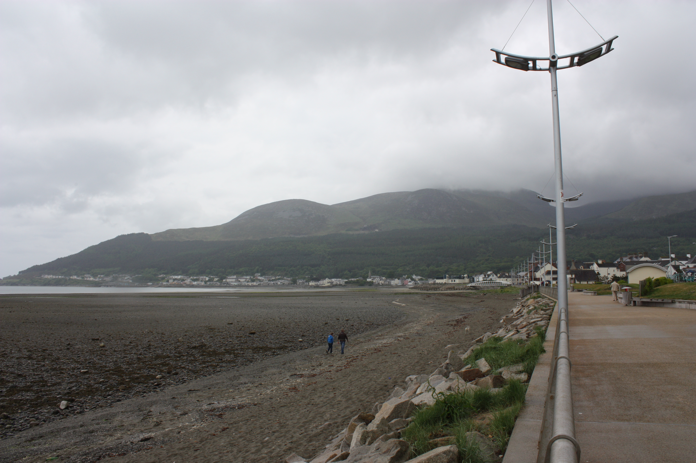
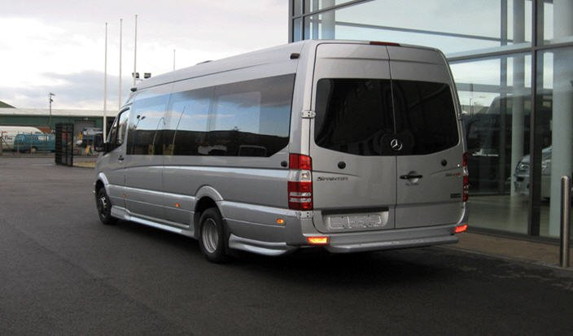

YOUR LOCAL JOURNEY STARTS HERE
From the Mournes.
To wherever.
The everyday lift. The early flight. The big occasion.
Travel with a local team that knows the way.
A LIFT FOR EVERY OCCASION
One local team.
So many ways to travel.
Near or far, business or pleasure.
Find the journey that suits you.
Local taxis
For errands, appointments and the journey home. Your Newcastle taxi, around the clock.
Arrange a lift 02 / FURTHER AFIELDAirport transfers
Pickups and drop-offs for Belfast City, Belfast International and Dublin airports.
Plan a transfer 03 / SOMETHING SPECIALExecutive hire
Make an entrance at weddings and formals, or arrange travel for business and special occasions.
Discuss your occasion 04 / MAKE A DAY OF ITDay trips & tours
Golf outings, group days and coastal adventures. Leave the driving to us.
Plan a day out
AT HOME IN NEWCASTLE
Local knowledge.
A personal touch.
Getting around should feel straightforward. We're an established local taxi company, helping Newcastle's residents and visitors travel for work, leisure and everything in between.
From saloons to people carriers, talk to us about the right vehicle for your journey. A female driver can be requested, too.
Talk to the team · 028 4372 3030LET'S GET YOU THERE
A little planning.
A smoother journey.
Tell us where you're going and prepare an enquiry for the team.
BEFORE YOU GO
A few helpful answers.
Which airports do you cover?
Belfast City, Belfast International and Dublin. Contact the team to arrange your pickup or drop-off.
Can I pay by card?
Yes, the business accepts credit card payments. Check any payment arrangements with the team when booking.
Can you accommodate a group?
People carriers and day-trip travel are available. Tell the team your passenger numbers and luggage requirements to confirm a suitable vehicle.
Does an email enquiry confirm my booking?
No. The team needs to confirm availability and your journey details. For an immediate taxi, call 028 4372 3030.
YOUR NEXT STOP STARTS WITH US